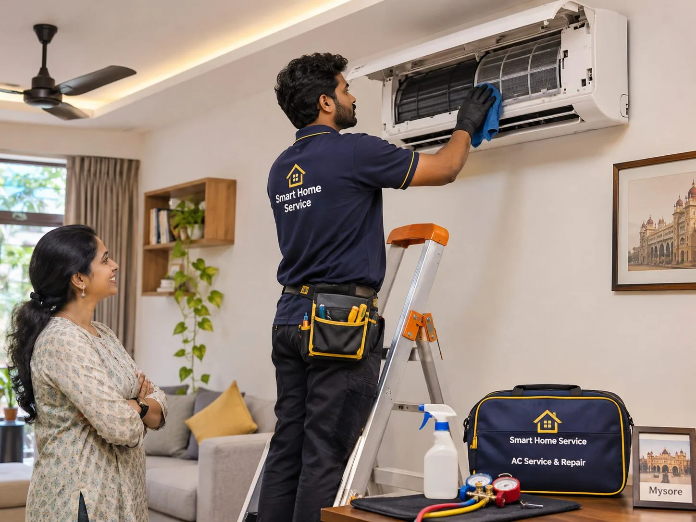

AC Not Cooling
Low gas, dirty filters or coils, a faulty capacitor or compressor can affect cooling. We check the cause before recommending a repair.
Ask about this repair →Free visit & inspection. AC service from ₹599. Technician at your door within 30 minutes during working hours. 30-day warranty.

Mysore summers are hot, and an AC that runs weak or stops cooling makes every day harder. Smart Home Service provides doorstep AC service and repair across Mysore. Our team handles split, window, inverter and non-inverter ACs from major brands. We inspect the unit free, explain the fault and share the price before any work begins.
No visiting charge. You pay only if you approve the repair.
Our technician inspects the appliance, explains the issue and shares a clear quote. Work starts only after you approve.
Talk to our teamTell us what your appliance is doing. Our team can help identify the next step.
Low gas, dirty filters or coils, a faulty capacitor or compressor can affect cooling. We check the cause before recommending a repair.
Ask about this repair →A blocked drain pipe, dirty cooling coil or incorrect indoor-unit tilt can cause leakage. We inspect and address the source.
Ask about this repair →We check for a leak, explain the repair and refill requirement before proceeding.
Ask about this repair →Power supply, PCB, remote, sensor or capacitor faults can stop an AC from starting.
Ask about this repair →Loose panels, fan motor, blower or compressor mounting issues may cause noise.
Ask about this repair →Dust and build-up inside filters and coils can cause unpleasant smells. Ask about jet/deep cleaning.
Ask about this repair →Low refrigerant or restricted airflow can cause freezing. We inspect the underlying cause.
Ask about this repair →We read the displayed code and check the sensor or control board associated with the fault.
Ask about this repair →Every visit starts with a free inspection. We confirm the scope and price before any work.
| Service | What's included | Price |
|---|---|---|
| AC General Service | Filter and coil cleaning, drain pipe check, gas pressure and cooling test | From ₹599 |
| AC Jet / Deep Cleaning | Pressure-jet cleaning of indoor coil and blower; confirm exact scope on inspection | Price on request |
| AC Repair | Diagnosis and repair of cooling, power, noise and leakage problems | Quote after free inspection |
| AC Gas Refilling & Leak Fixing | Leak check, repair recommendation and gas top-up or refill | Quote after free inspection |
| AC Installation & Uninstallation | Safe removal and fitting for split and window ACs | Price on request |
| PCB, Capacitor & Compressor Repair | Part-level testing and repair or replacement | Quote after free inspection |
Prices marked “quote after free inspection” depend on the fault, model and parts required. Any unconfirmed service price is shown as “Price on request” rather than estimated.
Split AC, window AC, inverter AC and non-inverter AC.
Smart Home Service is an independent multi-brand repair service and is not an authorised service centre of any brand.
Tell us the appliance issue and area.
Technician checks the appliance and shares a quote.
We proceed only after you agree.
We test the appliance and provide a bill.
Our technicians cover these Mysore neighbourhoods. Call to confirm arrival time for your location.
AC general service starts from ₹599. The visit and inspection are free. For repairs, gas refilling or part replacement, our technician shares the exact price after inspection.
The source brief recommends servicing at least twice a year: before summer and after the heavy-use months. Daily-use ACs may need more frequent attention.
Common causes include a dirty filter or coil, low gas due to a leak, a weak capacitor, or a compressor or fan-motor fault. Inspection helps identify the cause.
The cost depends on AC capacity, gas type and whether a leak is present. We inspect first and share the quote before work.
Yes. We service split and window ACs, both inverter and non-inverter, across major brands.
A general service usually takes around 45–60 minutes per AC. Repair time depends on the fault and parts availability.
In most parts of Mysore, we aim to reach within 30 minutes during working hours. Call or WhatsApp to confirm.
The service brief specifies a 30-day warranty. Keep the repair bill and contact the team if the same problem returns.
Free visit and inspection, clear quote before work and a 30-day warranty.